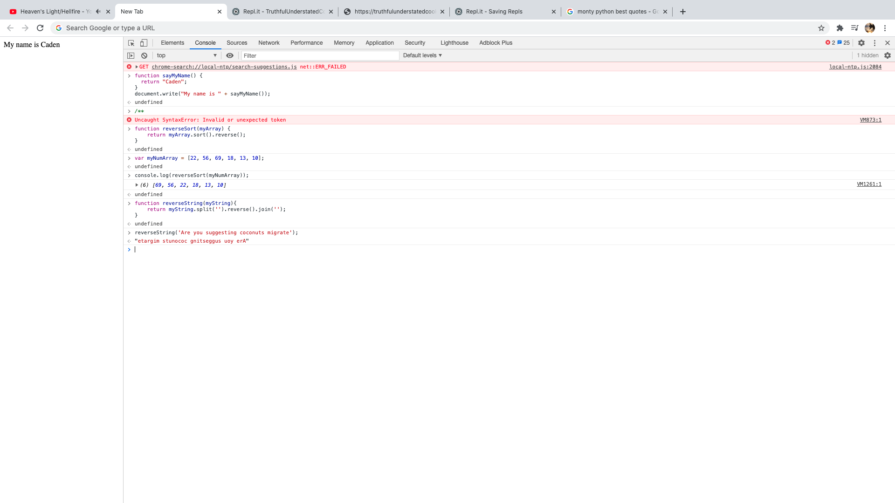

Lab 7: Functions
Challenges
It was challenging to see my javascript functioning because replit kept on saying my coding was unidentified, which is entirely possible. However, when I tried to put it in my console it worked just fine. Other than that, there were no issues.
Results
An html index, a function that can say "My name is Caden", an array that gives the reverse order of an array of numbers, and a string that shows the reverse of Monty Python's "Are you suggesting that coconuts migrate" quote.
Below is the first javascript task I coded in the console in the inspect tab.
This is the next step we coded, its the same coding as in the console, but its written out in Atom.